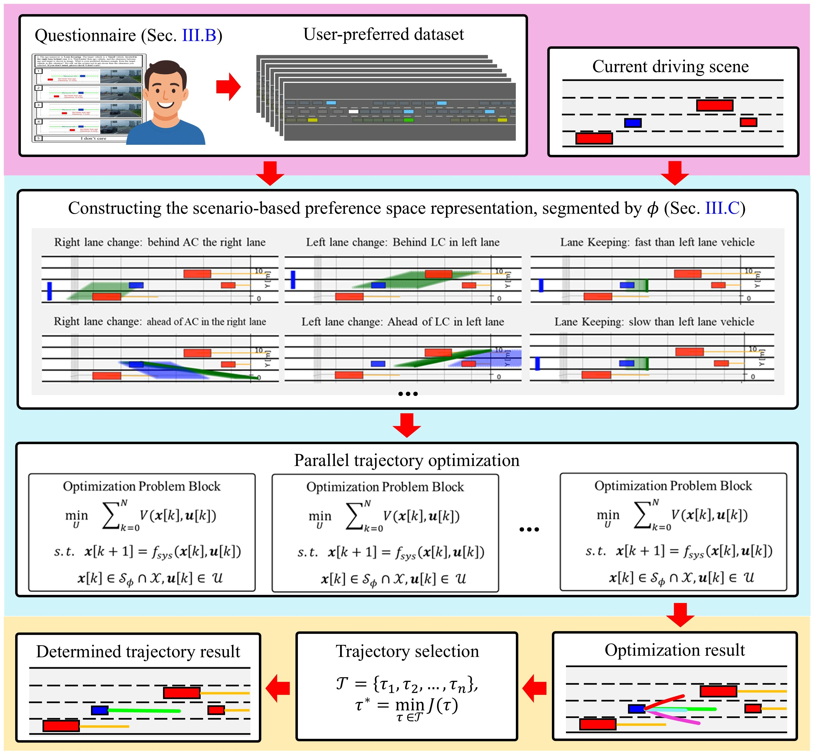
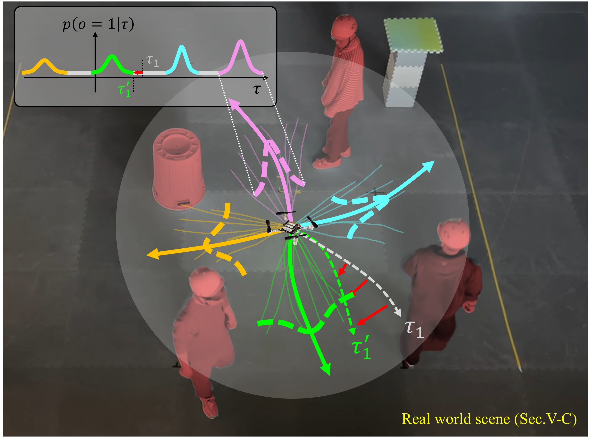
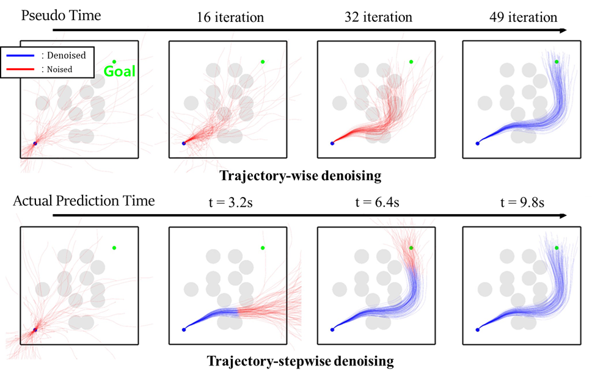
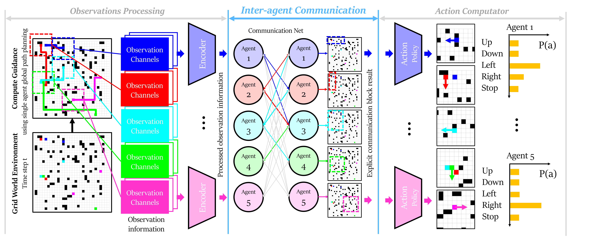
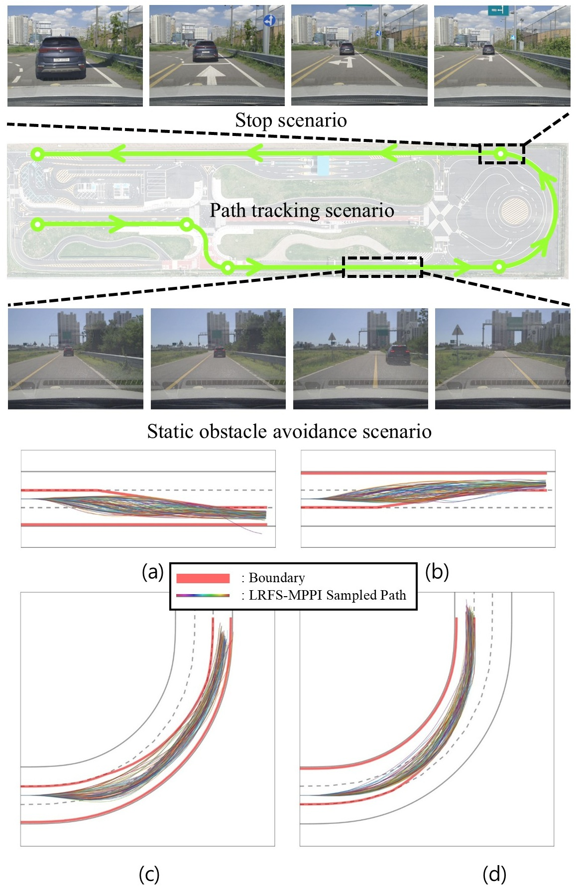

Research
My research focuses on human-preference-aware autonomous driving. I study trajectory planning methods that incorporate human preferences toward normal-to-urgent driving scenarios.
|
|

|
Personalized Autonomous Driving via Optimal Control with Clearance Constraints from Questionnaires
Yonjae Lim*,
Dabin Kim, and H. Jin Kim
ICRA, 2026
paper
/
video
/
project page
Driving without considering the preferred separation distance from surrounding vehicles may cause discomfort for users.
To address this limitation, this paper proposes a human-preference-aware driving planner that incorporates users’ desired clearance from surrounding vehicles as constraints in an optimal control problem.
Simulations with different user responses show that the planner better aligns with individual preferences than preference-agnostic baselines.
|
|

|
Safe Multimodal Replanning via Projection-based Trajectory Clustering in Crowded Environments
Yonjae Lim*,
Seungwoo Jung, Dabin Kim, Dongjae Lee, and H. Jin Kim
RA-L, 2025
paper
/
video
/
project page
Crowded and dynamic environments require fast replanning; however, single-trajectory optimization lacks alternative paths, while parallel optimization often relies on predefined initial guidance.
In this work, we identify multimodal optimal trajectory distributions without initial guidance by projecting sampled trajectories onto safe constraint sets, clustering them, and optimizing each cluster using MPPI.
Simulation and hardware experiments demonstrate higher success rates and safe drone navigation in crowded 3D environments.
|
|

|
Efficient Learning-Based Path Planning on Receding Horizon with Conditional Flow Matching
Yonjae Lim*,
Yongjae Lim, Yeonsoo Park, Jeongtae Huh, Youngsoo Han, and H Jin Kim
IJCAS, 2026
paper
Denoising-based planning can generate safe and optimized trajectories but often requires slow iterative refinement.
This paper proposes a normalizing-flow-based path-planning method that refines trajectories step by step along the planning horizon, enabling adaptive trajectory-length adjustment under computational time constraints.
The generated trajectory can also initialize MPPI optimization, reducing required iterations and improving efficiency.
The method is validated through simulation comparisons with diffusion-like planners and hardware experiments.
|
|

|
A Survey on Collision Avoidance Algorithms for Multi-robot Systems
Dahyun Oh*, Yonjae Lim, Hoseong Jung, Jeongtae Huh, Jusuk Lee, Changhyun Choi, H. Jin Kim, and Jungwon Park
IJCAS, 2025
paper
Multi-robot systems improve efficiency through cooperation, but collision avoidance with static and dynamic obstacles remains a major challenge.
This survey reviews recent collision avoidance methods, including classical centralized and decentralized approaches as well as learning-based methods.
|
|

|
Reachable-Set-based Trajectory Sampling for Local Planning of Autonomous Vehicles
Yonjae Lim*,
Youngmin Yoon, Jeonghyun Byun, Sangyoon Kim, and H. Jin Kim
Access, 2025
paper
To improve sampling efficiency in sampling based trajectory optimization, we focus on increasing the ratio of feasible trajectory samples among all sampled trajectories.
To this end, we propose LRFS MPPI, which combines the Lateral Recursive Feasible Set (LRFS), a recursively computed feasible steering input set that guarantees the vehicle remains within road boundaries over the prediction horizon, with truncated normal sampling.
We demonstrate through simulation and real world experiments that the proposed method generates high quality collision free trajectories more efficiently and reliably.
|
|
{kind=link}